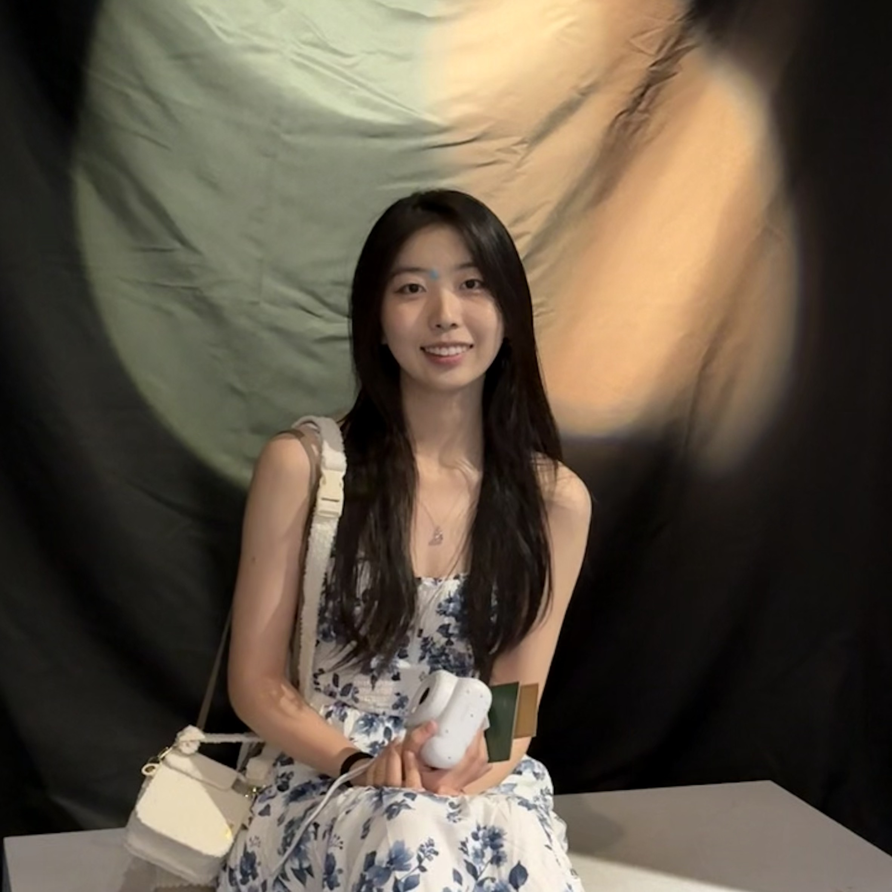

|
Dianlun (Jennifer) Luo I'm an incoming CS Ph.D. student at the University of Washington advised by Prof. Gilbert Bernstein. Previously, I completed my B.A. at Columbia University with a double major in Mathematics and Computer Science. I was very fortunate to be advised by Prof. Yulong Xing during the ROMUS program at the Ohio State University in summer 2023. |
 |
{kind=link}
ResearchMy research interests include computer graphics, physics simulations, and numerical analysis. |

|
Efficient Variable Time-stepping Adaptive DLN Algorithms for the Allen-Cahn Equation
Yiming Chen, Dianlun Luo, Wenlong Pei, Yulong Xing J Sci Comput, 2025 Part of the 2023 ROMUS Program. |

|
Exploring a Geometric Conjecture, Some Properties of Blaschke Products, and the Geometry of Curves Formed by Them
Mehmet Celik, Mathis Duguin, Jia Guo, Dianlun Luo, Kamryn Spinelli, Yunus E. Zeytuncu, Zhuoyu Zhu Comput. Methods Funct. Theory, 2025 Part of the 2022 Polymath Jr. REU. |

|
A Dynamic Wall Design with Tunable Angular Emissivity for All-season Thermal Regulation
Qilong Cheng, Chao Tang, Dianlun Luo, Minjoon Park, Steven Tian, Yuan Yang Cell Reports Physical Science, 2024 |
Miscellanea |
Talks/Posters |
Applied and Numerical Aspects of Nonlocal Initial Value Problems Joint Mathematics Meetings, Seattle, WA (January 8, 2025) Applied and Numerical Aspects of Nonlocal Initial Value Problems Joint Mathematics Meetings, Seattle, WA (January 10, 2025) Nonlocal Initial Value Problems - Theoretical, Modeling, and Numerical Aspects Polymath Jr. Final Conference, Virtual (August 14, 2024) Hyperbolic Nonlinear Elasticity. An Investigation. Undergraduate Summer School on Modeling and Simulation with Partial Differential Equations, Texas A&M University, College Station, TX (May 2024) Toric resolution of singularities. Reflexive polytopes and Fano toric varieties. MATH UN3951 Undergraduate Seminars I (Toric Varieties), Columbia University (Fall 2023) Study of Variable Step Method of Dahlquist, Liniger, and Nevanlinna for the Allen-Cahn Model. Young Mathematicians Conference, The Ohio State University (August 15, 2023) Summer Research Symposium, The Ohio State University (July 27, 2023) Finding Ellipses: Blaschke products and their connection with Poncelet's theorem. Joint Mathematics Meetings, Boston, MA (January 7, 2023) Introduction to Elliptic Curves and Mordell's Theorem. Directed Reading Program, Columbia University, New York, NY (December 15, 2022) |
Teaching |
MATH UN3020 Number Theory and Cryptography: Spring 2025 MATH GU4042 Intro to Modern Algebra II: Fall 2024 MATH UN2030 Ordinary Differential Equations: Fall 2023, Spring 2024 |
|
Website template from Jon Barron. |